CS184/284A Spring 2025 Homework 4 Write-Up
Link to webpage: cal-cs184-student.github.io/hw-webpages-la-celeste-website
Link to GitHub repository: github.com/cal-cs184-student/sp25-hw3-fiat-lux
Overview
Give a high-level overview of what you implemented in this homework. Think about what you've built as a whole. Share your thoughts on what interesting things you've learned from completing the homework.Part 1: Masses and springs
Take some screenshots of scene/pinned2.json from a viewing angle where you can clearly see the cloth wireframe to show the structure of your point masses and springs.
| 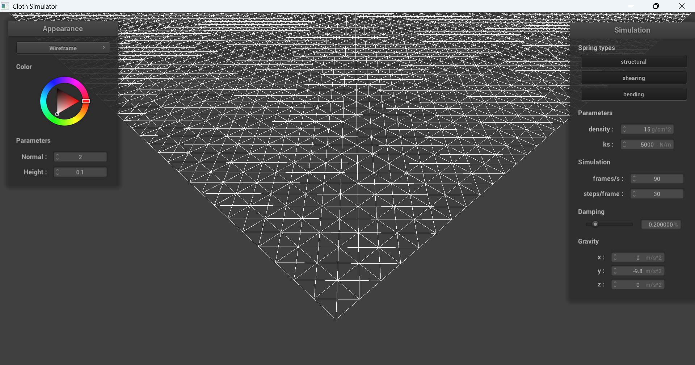 |
Show us what the wireframe looks like (1) without any shearing constraints, (2) with only shearing constraints, and (3) with all constraints.
|
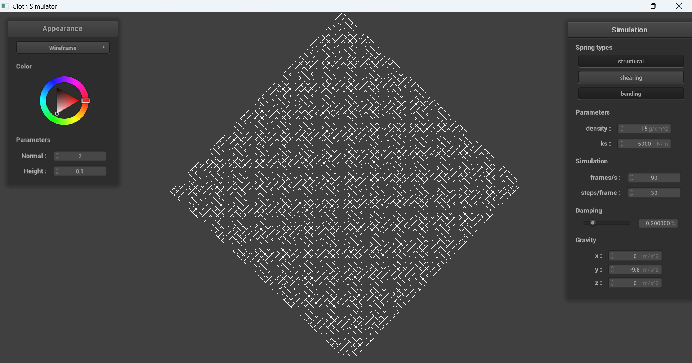
|
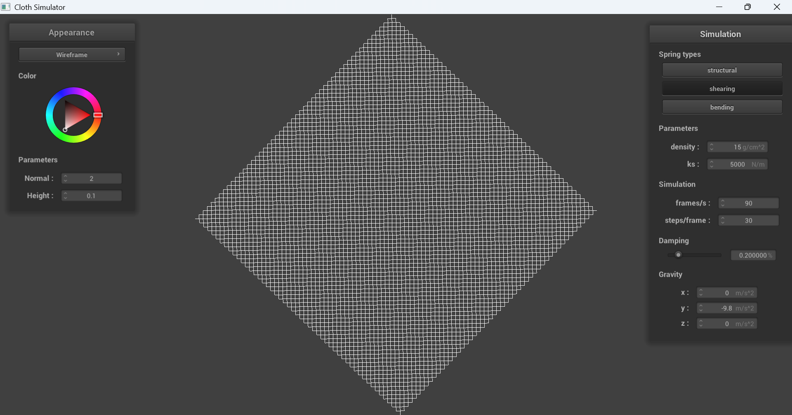
|
|
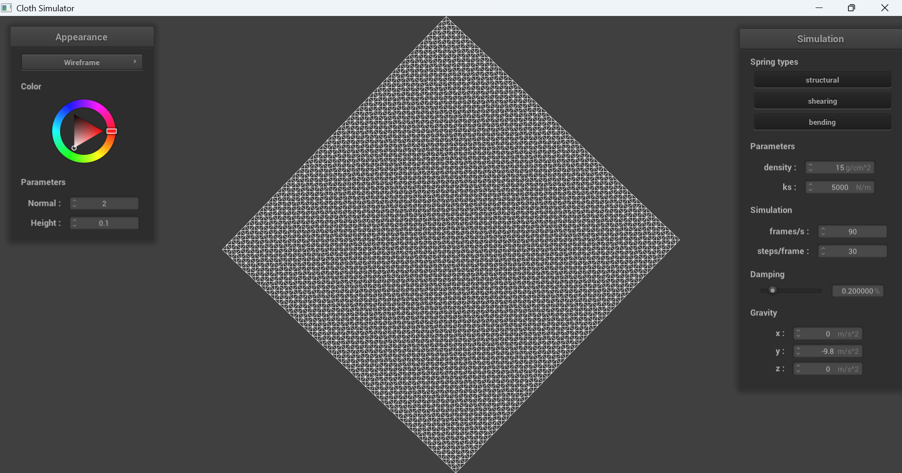
|
Part 2: Simulation via numerical integration
Experiment with some the parameters in the simulation. To do so, pause the simulation at the start with P, modify the values of interest, and then resume by pressing P again. You can also restart the simulation at any time from the cloth’s starting position by pressing R.
Describe the effects of changing the spring constant ks; how does the cloth behave from start to rest with a very low ks? A high ks?
The spring constant k_s controls how stiff the springs are. When k_s is low, we see that it looks very saggy. It's flexible with exaggerated deformations, you can see this in the ripples at the top. When k_s is high, the cloth is very stiff and isn't sensitive to deformations. It ripples much less, and the cloth's middle holds its shape instead of drooping down.
|
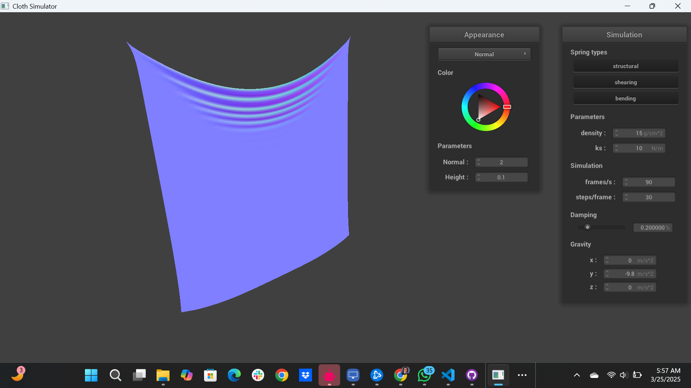
|
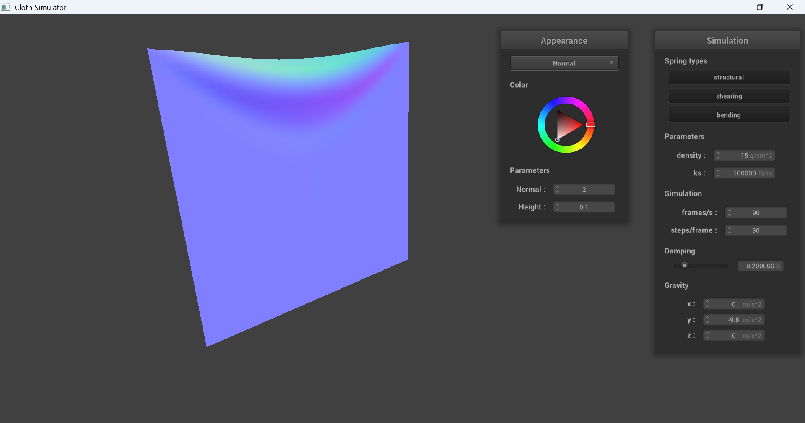
|
What about for density?
In low density, we see that the cloth doesn't have many ripples. Meanwhile, it becomes wrinkly as we increase density. Density seems to have an effect similar to the inverse of k_s. This is probably because as density increases, gravitational forces will have greater influence than the spring forces. This causes the cloth to drape naturally, giving it more ripples.
|
|
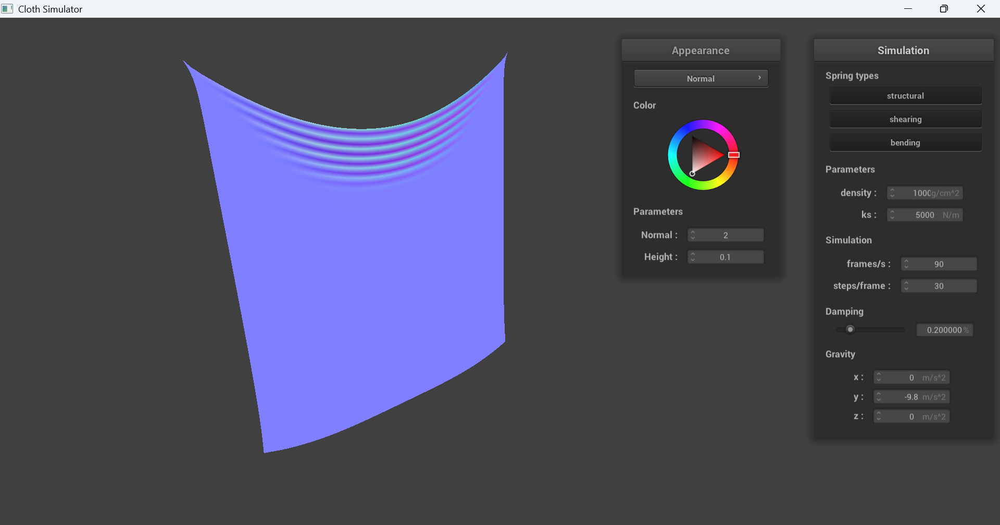
|
What about for damping?
When the damping is low, the cloth rapidly swings back and forth before it settles in its final position. Meanwhile, when the cloth has high damping, it rigidly settles into its final position without swinging back and forth. This makes sense, because damping represents the loss of energy due to forces which may be caused by friction.
|
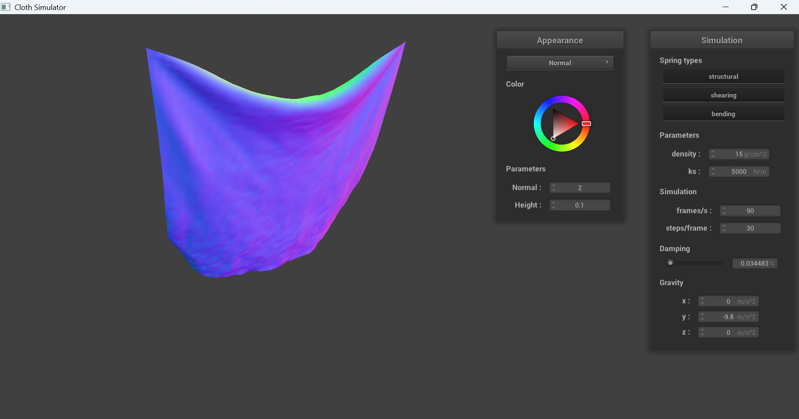
|

|
For each of the above, observe any noticeable differences in the cloth compared to the default parameters and show us some screenshots of those interesting differences and describe when they occur.
Here's a fun case I also wanted to talk about. When the damping is 0%, the cloth indefinitely swings back and forth. No friction will ever stop it. Weeeee!!!
|
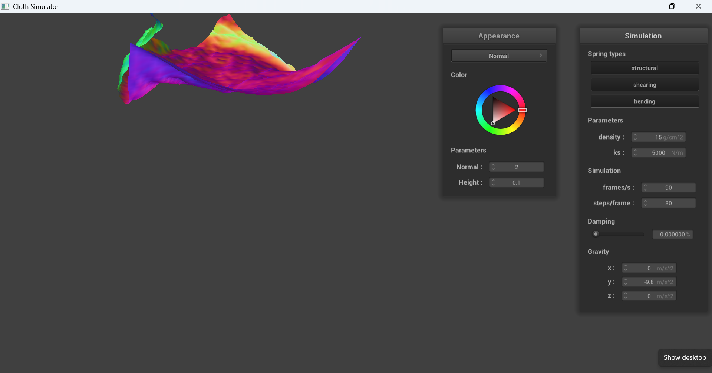
|
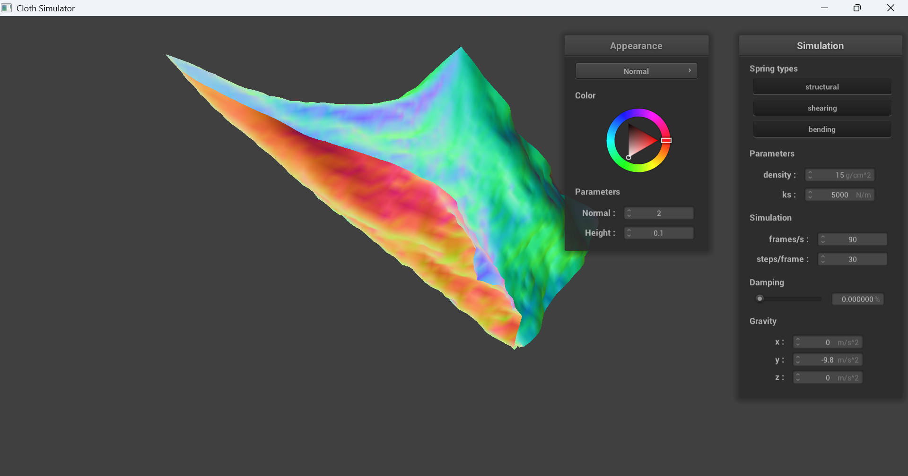
|
Show us a screenshot of your shaded cloth from scene/pinned4.json in its final resting state! If you choose to use different parameters than the default ones, please list them.
|
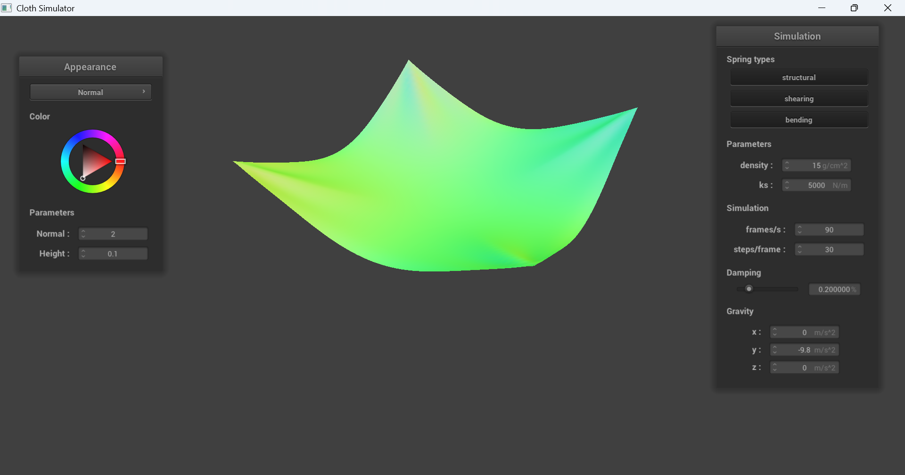
|
Part 3: Handling collisions with other objects
Describe your implementation of handling collisions with spheres and planes.
Show us screenshots of your shaded cloth from scene/sphere.json in its final resting state on the sphere using the default ks = 5000 as well as with ks = 500 and ks = 50000. Describe the differences in the results.
Show us a screenshot of your shaded cloth lying peacefully at rest on the plane. f you haven’t by now, feel free to express your colorful creativity with the cloth! (You will need to complete the shaders portion first to show custom colors.)
Part 4: Handling self-collisions
Describe your implementation of handling self-collisions.
Show us at least 3 screenshots that document how your cloth falls and folds on itself, starting with an early, initial self-collision and ending with the cloth at a more restful state (even if it is still slightly bouncy on the ground).
Vary the density as well as ks and describe with words and screenshots how they affect the behavior of the cloth as it falls on itself.
Part 5: Shaders
Explain in your own words what is a shader program and how vertex and fragment shaders work together to create lighting and material effects.
Explain the Blinn-Phong shading model in your own words. Show a screenshot of your Blinn-Phong shader outputting only the ambient component, a screen shot only outputting the diffuse component, a screen shot only outputting the specular component, and one using the entire Blinn-Phong model.
Show a screenshot of your texture mapping shader using your own custom texture by modifying the textures in /textures/.
Show a screenshot of bump mapping on the cloth and on the sphere. Show a screenshot of displacement mapping on the sphere. Use the same texture for both renders. You can either provide your own texture or use one of the ones in the textures directory, BUT choose one that’s not the default texture_2.png. Compare the two approaches and resulting renders in your own words. Compare how your the two shaders react to the sphere by changing the sphere mesh’s coarseness by using -o 16 -a 16 and then -o 128 -a 128.
Show a screenshot of your mirror shader on the cloth and on the sphere.
Explain what you did in your custom shader, if you made one.